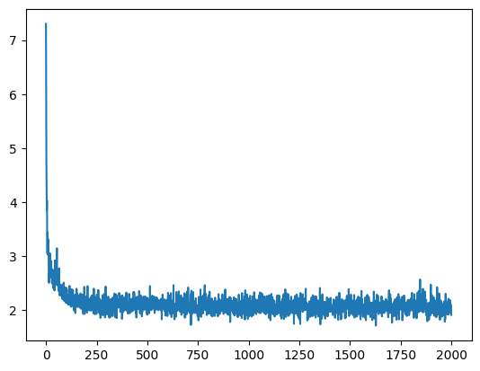
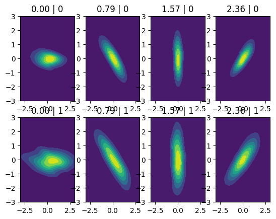
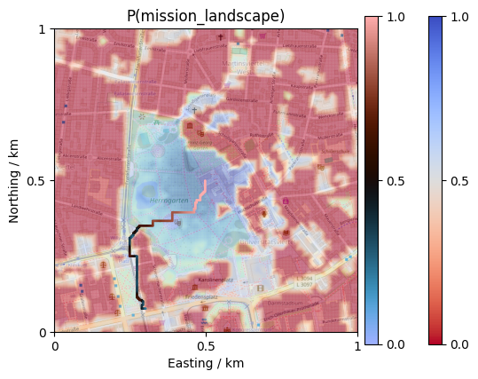

[1]:
# The imports we will need to run Constitutional Control
import matplotlib.pyplot as plt
import torch
from numpy import array, cos, dot, pi, random, sin, zeros
from scipy.stats import multivariate_normal
from promis import ConstitutionalController, DoubtDensity
from promis.geo import CartesianCollection
[2]:
# Select a compute device
devices = ['cpu', 'mps', 'cuda']
device = devices[0]
torch.device(device)
torch.set_default_dtype(torch.float64)
# Conditional density to learn, simulates a turning 2D Gaussian
# with variance depending on controller
def sample_uav_error(controller, heading, n_samples=1000):
samples = zeros((n_samples, 2))
for sample in range(n_samples):
rot = array([
[cos(heading[sample].item()), -sin(heading[sample].item())],
[sin(heading[sample].item()), cos(heading[sample].item())]
])
density = multivariate_normal(array([0.0, 0.0]), array([
[1.0 + controller[sample][0], 0.0],
[0.0, 0.1 * (1.0 + controller[sample][0])]
]))
samples[sample] = dot(density.rvs(1), rot)
return torch.from_numpy(samples)
# Setup doubt density training
doubt_space = {
'controller': {
'type': 'categorical',
'number_of_classes': 2
},
'heading': {
'type': 'continuous',
}
}
doubt_density = DoubtDensity(
doubt_space=doubt_space,
number_of_states=2,
number_of_hidden_features=100,
number_of_layers=5
)
# Train with synthetic data
number_of_samples = 10000
doubt_space['controller']['values'] = torch.from_numpy(random.choice([0, 1], (number_of_samples, 1)))
doubt_space['heading']['values'] = torch.from_numpy(random.random((number_of_samples, 1)) * pi)
conditional_state_samples = sample_uav_error(doubt_space['controller']['values'], doubt_space['heading']['values'], number_of_samples)
number_of_epochs = 20
batch_size = 100
losses = doubt_density.fit(conditional_state_samples, doubt_space, number_of_epochs, batch_size)
# Show results
plt.plot(range(len(losses)), losses)
plt.show()
fig, ax = plt.subplots(2, 4)
for index, heading in enumerate(array([0, 0.25, 0.5, 0.75]) * pi):
for controller in [0, 1]:
axis = ax[controller, index]
xline = torch.linspace(-3.0, 3.0, 100)
yline = torch.linspace(-3.0, 3.0, 100)
xgrid, ygrid = torch.meshgrid(xline, yline)
states = torch.cat([xgrid.reshape(-1, 1), ygrid.reshape(-1, 1)], dim=1)
with torch.no_grad():
doubt_space['heading']['values'] = torch.tensor([[heading]]).repeat(100 * 100, 1)
doubt_space['controller']['values'] = torch.tensor([[controller]]).repeat(100 * 100, 1)
density = doubt_density.prob(states, doubt_space).reshape(100, 100)
axis.contourf(xgrid.numpy(), ygrid.numpy(), density.numpy())
axis.set_title(f"{heading:.2f} | {int(controller)}")
plt.show()
100%|██████████| 20/20 [00:11<00:00, 1.72it/s]

/Volumes/Vault/Repositories/CoCo/venv/lib/python3.13/site-packages/torch/functional.py:554: UserWarning: torch.meshgrid: in an upcoming release, it will be required to pass the indexing argument. (Triggered internally at /Users/runner/work/pytorch/pytorch/pytorch/aten/src/ATen/native/TensorShape.cpp:4316.)
return _VF.meshgrid(tensors, **kwargs) # type: ignore[attr-defined]

[5]:
# Load the landscape produced by promis.ipynb and init CoCo
landscape = CartesianCollection.load("data/landscape.pkl")
coco = ConstitutionalController()
# Select different doubt feature values, here we have just one feature velocity
# and use it directly as doubt density parameter
for heading in list(array([0, 0.25, 0.5, 0.75]) * pi):
print(f"Doubt feature heading h = {heading}")
doubt_space['heading']['values'] = torch.tensor([[0.0]])
doubt_space['controller']['values'] = torch.tensor([[1]])
augmented_landscape = coco.apply_doubt(
landscape=landscape,
doubt_density=doubt_density,
doubt_space=doubt_space,
number_of_samples=100,
)
image = augmented_landscape.scatter(s=0.4, plot_basemap=True, rasterized=True, cmap="coolwarm_r", alpha=0.25)
cbar = plt.colorbar(image, ticks=[0.0, 0.5, 1.0], aspect=25, pad=0.02)
cbar.ax.set_yticklabels(['0.0', '0.5', '1.0'])
cbar.solids.set(alpha=1)
print("Search and scatter path ...")
start = (0.0, 0.0)
goal = (-200.0, -425.0)
path = augmented_landscape.search_path(start, goal, cost_model=lambda p: 1.0 - p, value_filter=lambda p: p > 0.3)
scatter = plt.scatter(
[n[0] for n in path], [n[1] for n in path],
s=1,
c=[
coco.compliance(
path=path,
landscape=augmented_landscape,
doubt_density=doubt_density,
doubt_space=doubt_space,
number_of_samples=100
)
],
vmin=0,
vmax=1,
cmap="berlin"
)
cbar = plt.colorbar(scatter, ticks=[0.0, 0.5, 1.0], aspect=25, pad=0.02)
cbar.ax.set_yticklabels(['0.0', '0.5', '1.0'])
cbar.solids.set(alpha=1)
ticks = [-500, 0, 500]
labels = ["0", "0.5", "1"]
plt.xlabel("Easting / km")
plt.ylabel("Northing / km")
plt.xticks(ticks, labels)
plt.yticks(ticks, labels)
plt.xlim([-500, 500])
plt.ylim([-500, 500])
plt.title("P(mission_landscape)")
plt.show()
Doubt feature heading h = 0.0
Search and scatter path ...

Doubt feature heading h = 0.7853981633974483
Search and scatter path ...
Doubt feature heading h = 1.5707963267948966
Search and scatter path ...
Doubt feature heading h = 2.356194490192345
Search and scatter path ...